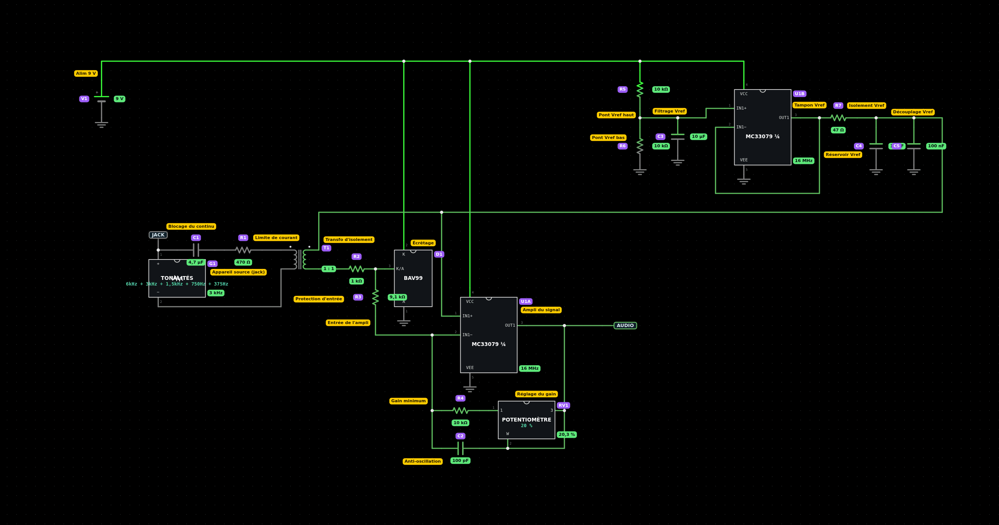
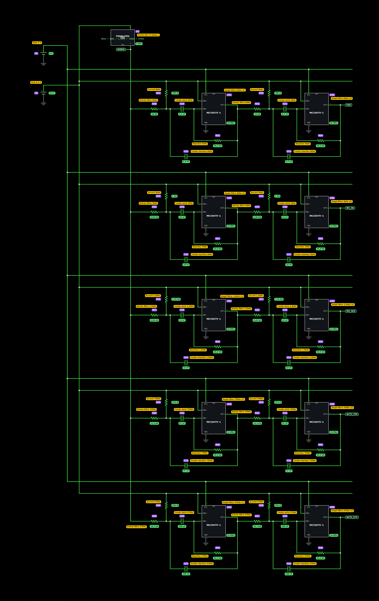
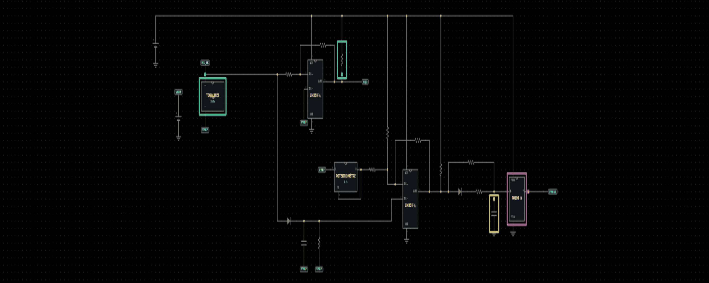
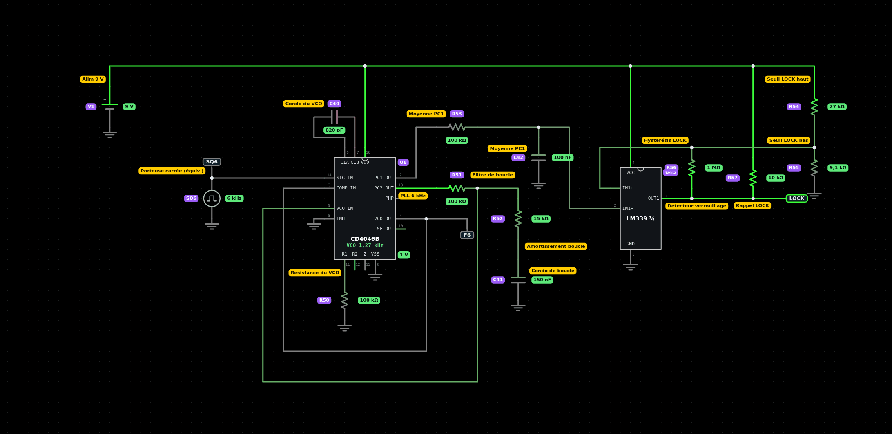
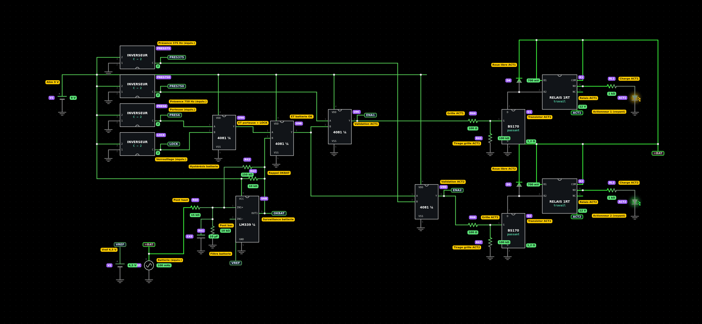
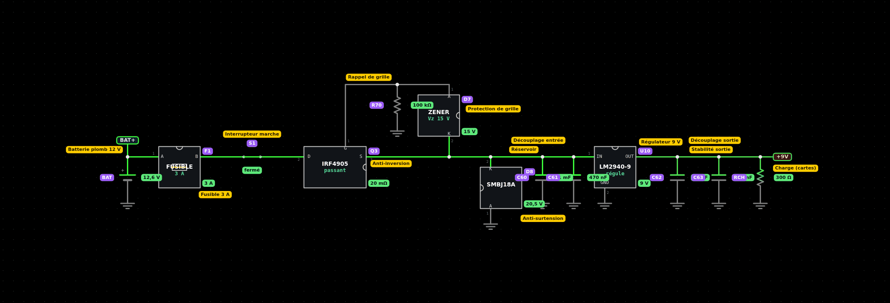
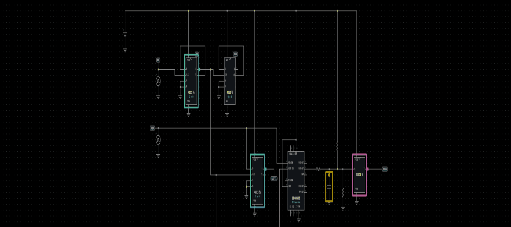
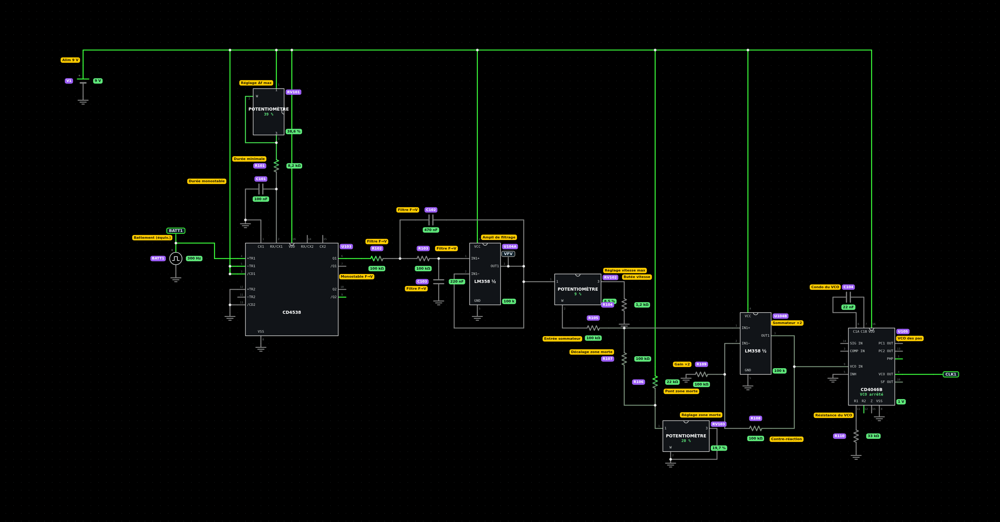
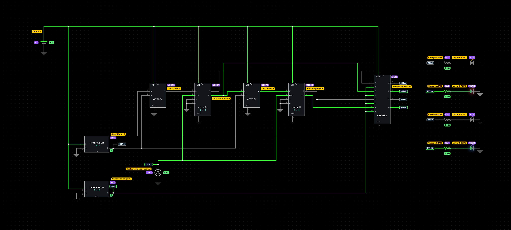
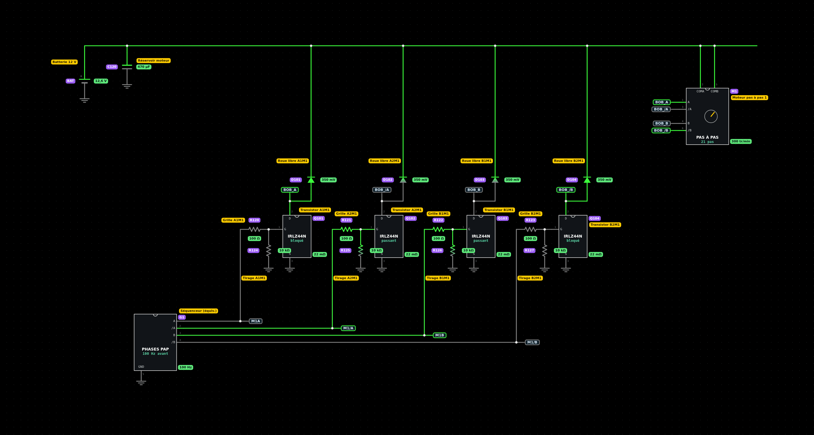

Le robot reçoit ses ordres sous forme de tonalités audio sur une entrée jack : une référence à 6 kHz, une tonalité par moteur (3 kHz et 1,5 kHz) et une par actionneur (750 Hz et 375 Hz). Le signe de l'écart entre la fréquence reçue et la référence donne le sens de rotation d'un moteur, sa valeur donne la vitesse. Tout est réalisé en logique CD4000, avec quelques amplificateurs opérationnels et comparateurs.
.circuit.json s'ouvrent avec Fichier → Ouvrir.
Plan de fréquences
| Voie | Fréquence | Plage | Rôle |
|---|---|---|---|
| Référence | 6 kHz | fixe | Verrouille la PLL ; base des références moteur ; présence générale |
| Moteur 1 | 3 kHz | 3 kHz ± Δfmax | Vitesse et sens du moteur 1 |
| Moteur 2 | 1,5 kHz | 1,5 kHz ± Δfmax | Vitesse et sens du moteur 2 |
| Actionneur 1 | 750 Hz | fixe | Relais K1 (tout ou rien) |
| Actionneur 2 | 375 Hz | fixe | Relais K2 (tout ou rien) |
- Toutes les voies sont des divisions par 2 de 6 kHz (6 kHz ÷ 16 = 375 Hz) : la carte moteur fabrique ses références 3 kHz et 1,5 kHz en divisant la référence reçue, donc à écart nul le moteur est exactement à l'arrêt.
- Source : sortie jack d'un téléphone ou d'un ordinateur, environ 0,2 V crête par tonalité quand les cinq sont présentes.
- Écart maximal Δfmax réglable de ±0,2 à ±0,5 kHz (recommandé : ±0,3 kHz, pour garder de la marge entre le moteur 2 et l'actionneur à 750 Hz). Vitesse maximale réglable de 0,5 à 3 tr/s (moteur de 200 pas par tour).
- v = vmax · |Δf| / Δfmax ; le sens suit le signe de Δf. Zone morte sous environ 20 Hz d'écart.
- Alimentation : batterie au plomb 12 V (10,5 à 14,7 V) ; logique en +9 V régulé, moteurs et relais sur la batterie.
Architecture
Deux cartes, à construire et régler dans cet ordre :
- Partie 1, carte de réception (+9 V régulé, Vref = 4,5 V) : A entrée, B filtres, C mise en forme et présence, D PLL 6 kHz, E validation et actionneurs, H alimentation.
- Partie 2, carte moteur : références 3 et 1,5 kHz, écart et sens (M1), conversion en vitesse et VCO (M2), séquenceur (M3), puissance (M4).
Liaison entre les cartes, une nappe de 10 fils : +BAT, +9 V, masse, F6 (référence verrouillée), SQ3 et SQ15 (tonalités moteur mises en carré), PRES3 et PRES15 (présence des voies moteur), G (pilote présent, PLL verrouillée, batterie suffisante).
Partie 1 : carte de réception
Bloc A : entrée jack isolée, gain et Vref
- Isolement : T1, transformateur audio 1:1 (Triad TY-250P, 20 Hz–20 kHz, isolement 1500 V). Seul le signal alternatif passe : aucun courant continu ne peut remonter vers l'appareil, même carte en panne ou batterie inversée, et la boucle de masse avec un téléphone en charge disparaît.
- C1 (4,7 µF film) bloque le continu de la sortie audio ; R1 (470 Ω) limite le courant : l'appareil voit environ 1,5 kΩ.
- R2 (1 kΩ) et D1 (BAV99) écrêtent toute surtension avant l'ampli.
- U1A (MC33079) en inverseur : gain (R4 + RV1) / (R2 + R3) = 1 à 11, réglé par RV1 (100 kΩ) pour 2,4 V crête par tonalité en sortie des filtres ; C2 (100 pF) coupe au-delà de 15 kHz.
- Vref = 4,5 V : pont R5 / R6, C3, suiveur U1B, puis R7, C4 et C5.

Bloc B : banc de cinq filtres passe-bande
Chaque voie : deux passe-bande à contre-réaction multiple de gain 2 en cascade (gain 4, sélectivité doublée). R1 = Q / (G·ω0·C), R2 = 2Q / (ω0·C), R3 = Q / ((2Q² − G)·ω0·C), avec R3 et l'entrée + reliées à Vref.
| Voie | Amplis | Q | R1 | R2 | R3 | C (×4) | Pic simulé |
|---|---|---|---|---|---|---|---|
| 6 kHz | U1C, U1D | 5 | 14,0 kΩ | 56,2 kΩ | 590 Ω | 4,7 nF | 5,99 kHz |
| 3 kHz | U2A, U2B | 3 | 8,06 kΩ | 31,6 kΩ | 1,00 kΩ | 10 nF | 3,00 kHz |
| 1,5 kHz | U2C, U2D | 2,5 | 6,04 kΩ | 24,3 kΩ | 1,15 kΩ | 22 nF | 1,49 kHz |
| 750 Hz | U3A, U3B | 5 | 11,3 kΩ | 45,3 kΩ | 475 Ω | 47 nF | 745 Hz |
| 375 Hz | U3C, U3D | 5 | 10,7 kΩ | 42,2 kΩ | 442 Ω | 100 nF | 376 Hz |
Les voies moteur ont un Q faible pour laisser passer f0 ± Δfmax (bande à −6 dB : 2,54 à 3,54 kHz et 1,23 à 1,82 kHz).

Bloc C : mise en forme carrée et présence (voie 3 kHz)
- Carré : comparateur LM339 à hystérésis (R40 = 47 kΩ, R41 = 4,7 MΩ, rappel R42 = 10 kΩ) → SQ6, SQ3, SQ15.
- Présence : détecteur de crête D2 (BAT85), C30, R43, puis comparateur au seuil Vref + 0,48 à 0,83 V (R44, R45, RV2 5 kΩ) : 0,5 V sur les voies moteur, 0,8 V sur les voies fixes.
- Temporisation : R47 · C31 font apparaître PRES après environ 25 ms ; D3 + R48 le font retomber en 3 ms ; R46 donne environ ±70 mV d'hystérésis ; trigger CD40106B.

Bloc D : PLL de référence 6 kHz
- CD4046B U8 : VCO (R50 = 100 kΩ, C40 = 820 pF NP0) rebouclé sur COMP IN, comparateur PC2, filtre de boucle R51, R52, C41 (fn ≈ 100 Hz, ζ ≈ 0,7).
- Verrouillage : moyenne de PC1 (R53, C42) comparée à 2,27 V (R54, R55) par U4D, hystérésis R56, rappel R57 → LOCK.
- F6, sortie du VCO, est exactement à la fréquence du pilote une fois verrouillée : elle part vers la carte moteur.

Bloc E : validation, batterie et actionneurs
- Validation (CD4081B) : G = PRES6 · LOCK · OKBAT ; ENA1 = G · PRES750 ; ENA2 = G · PRES375.
- Batterie : U6B compare +BAT divisé par R60 = 15 kΩ / R61 = 10 kΩ à Vref ; avec l'hystérésis de R62 et le rappel R63, OKBAT tombe à 10,8 V et revient vers 11,7 V (vérifié en simulation : 10,77 / 11,77 V). Une première version avec R60 = 14 kΩ donnait 10,4 / 11,2 V : le courant de R62 dans le pont avait été oublié.
- Actionneurs : BS170 (Q1, Q2), 100 Ω en série de grille, 100 kΩ vers la masse, roue libre 1N4148 ; relais 12 V sur +BAT (bobine admettant 14,4 V). Les contacts commandent l'actionneur sans lien électrique avec la carte.

Bloc H : alimentation par batterie au plomb
- F1 : fusible lame 3 A au plus près de la borne + (une batterie au plomb débite des centaines d'ampères en court-circuit).
- Q3 (IRF4905, canal P) : protection contre l'inversion avec quelques millivolts de chute ; D7 (Zener 15 V) protège la grille, R70 la tire à la masse.
- D8 (TVS SMBJ18A) écrête les surtensions de coupure des moteurs ; C60 (1000 µF) sert de réservoir.
- U10 (LM2940CT-9.0) : régulateur à faible chute ; le +9 V reste stable de 10 V à 14,7 V. C62 ≥ 22 µF exigé par le fabricant.
- Masse en étoile au pied de C60 : retours moteurs d'un côté, masse logique de l'autre.

Partie 2 : carte moteur
Pour chaque moteur : écart (bascule D, BATT1 = |Δf|) → sens (PC2 du CD4046B) → conversion (monostable + filtre, VFV = 9 V · T · |Δf|) → mise à l'échelle (VCOIN = Voff + α · VFV) → horloge de pas (VCO) et séquenceur. Avec Voff au seuil du VCO : v (tr/s) = K · α · 9 V · T · |Δf| / N. Seul le moteur 1 est dessiné ; le moteur 2 est identique à 1,5 kHz.
M1 : références, écart et sens
- U101 (CD4013B) divise F6 par 2 (F3 = 3 kHz) puis par 2 (F15 = 1,5 kHz).
- U102A échantillonne SQ3 au rythme de F3 : BATT1 est un carré à |Δf|.
- PC2 de U105 (CD4046B), filtré par R111 / C105 et ramené à 4,5 V par R112 / R113, attaque le trigger U109A : DIR1. En simulation : 7,9 à 8,4 V au-dessus de la référence, 0,6 à 1,1 V en dessous, de ±5 Hz à ±500 Hz. L'ancienne méthode en quadrature se trompait de sens dans 28 % des cas : d'où ce choix.

M2 : conversion, réglages et VCO
- Monostable U103A (CD4538B, ou CD14538B) : T = (R101 + RV101) · C101, choisi pour VFV = 4,5 V à Δfmax.
- Filtre de Sallen-Key U104A (LM358, fc ≈ 5 Hz) : rampe d'accélération naturelle d'environ 90 ms.
- Sommateur U104B (gain 2) : α · VFV (RV102, vitesse maximale) + Voff (R106, RV103, zone morte).
- VCO de U105 (R110 = 33 kΩ, C104 = 22 nF) → CLK1. En simulation, 3 tr/s demande RV102 presque en butée : si CLK1 n'atteint pas la cadence voulue, passer C104 à 18 nF.
| Δfmax | T | R101 + RV101 | RV101 (22 kΩ) |
|---|---|---|---|
| ±0,2 kHz | 2,5 ms | 25 kΩ | 16,8 kΩ |
| ±0,3 kHz (recommandé) | 1,67 ms | 16,7 kΩ | 8,5 kΩ |
| ±0,4 kHz | 1,25 ms | 12,5 kΩ | 4,3 kΩ |
| ±0,5 kHz | 1,0 ms | 10 kΩ | 1,8 kΩ |
| Vitesse max | Pas/s | α estimé | RV102 (x) |
|---|---|---|---|
| 0,5 tr/s | 100 | 0,13 | ≈ 0,3 kΩ |
| 1 tr/s | 200 | 0,25 | ≈ 1,6 kΩ |
| 2 tr/s | 400 | 0,50 | ≈ 4,4 kΩ |
| 3 tr/s | 600 | 0,75 (0,92 en simulation) | ≈ 7,2 kΩ (9,1 kΩ) |

M3 : séquenceur réversible et validation
- U106 (bascules D, horloge CLK1) et U107 (CD4070B) forment un compteur de Gray réversible : DA = QB ⊕ DIR1, DB = QA ⊕ DIR1 ⊕ 1. Dans un sens (QA, QB) parcourt 00 → 10 → 11 → 01, dans l'autre l'ordre inverse : seule la phase de la bobine B change de sens.
- U108 (CD4081B) valide les quatre phases par EN1 = G · PRES3 ; EN1 = 0 éteint tout.
- Sorties M1A, M1/A, M1B, M1/B vers la carte de puissance (simulées ici par des voyants).

M4 : puissance et moteur pas à pas
- Quatre IRLZ44N par moteur (Transistor A1M1, A2M1, B1M1, B2M1 : les deux moitiés des bobines A et B), 100 Ω de grille, 10 kΩ de tirage, roue libre 1N5819. Les prises médianes vont à +BAT.
- À la coupure, chaque drain monte vers 2 × +BAT (environ 29 V) : les IRLZ44N tiennent 55 V.
- Courant par phase = +BAT / Rbobine (±16 % entre 10,5 et 14,4 V) : moteur 12 V, ou résistance série par prise médiane.
- Variante bipolaire : double pont en H piloté par M1A à M1/B (niveaux 9 V à vérifier).

Choix des composants (archive)
Pourquoi chaque composant clé a été retenu, et par quoi le remplacer.
| Composant | Rôle | Pourquoi ce choix | Remplacement possible |
|---|---|---|---|
| Triad TY-250P (T1) | Transfo d'isolement | 1:1, 20 Hz–20 kHz ±1 dB, isolement 1500 V : protège l'appareil source, supprime la boucle de masse | Transformateur 600:600 Ω traversant (Triad TY-145P, OEP A262A7E, modèles EI14 « permalloy » 600:600) ; sans transfo : 10 kΩ en série + 100 Ω au manchon (moins sûr) |
| MC33079 | Ampli et filtres | Quadruple, 16 MHz : le gain en boucle ouverte doit dépasser 2Q² = 50 à 6 kHz ; un LM324 (1 MHz) ne suffit pas | TL074, OPA4134 (vérifier GBW et alimentation 9 V) |
| Condensateurs film PP ou C0G 5 % | Filtres, VCO, monostable | f0 varie comme 1/C : stabilité en température et faible tolérance | — |
| Résistances 1 % (E96) | Filtres, seuils | Fréquences centrales et seuils précis sans retouche | E24 avec réglage de RV2 / RV1 |
| LM339 | Carrés, présence, verrouillage, batterie | Quatre comparateurs à collecteur ouvert, alimentation unique 9 V | LM393 (double) |
| BAT85 (D2) | Détecteur de crête | Diode Schottky : faible seuil, la crête détectée suit mieux le signal | 1N5817 / BAT43 |
| CD40106B | Triggers de Schmitt | Mise en forme franche des présences et du sens | 74HC14 (à 5 V) |
| CD4046B | PLL 6 kHz, sens (PC2), VCO des pas | PC2 = comparateur phase-fréquence : sens sans ambiguïté ; VCO intégré | 74HC4046 (à 5 V) |
| CD4013B, CD4070B, CD4081B | Diviseurs, battement, séquenceur, validation | Logique 3–15 V directement en 9 V, encore disponible | Séries 74HC à 5 V avec adaptation de niveaux |
| CD4538B / CD14538B | Monostable F→V | Durée T stable fixée par RC ; le CD14538B remplace le CD4538B (non recommandé pour les nouvelles études) | — |
| LM358 | Filtre Sallen-Key, sommateur | Entrées et sortie proches de la masse en alimentation unique | TLV2372 |
| BS170 (Q1, Q2) | Commande des relais | MOSFET petit signal, commandé directement par une sortie CMOS 9 V | 2N7000 |
| Relais 12 V, bobine ≥ 300 Ω | Actionneurs | Isolation galvanique de l'actionneur ; doit accepter 14,4 V | Relais statique |
| IRLZ44N (Q101–Q108) | Phases moteur | Niveau logique (pleinement passant à 9 V), 55 V pour la surtension de coupure (≈ 29 V) | IRL540N |
| 1N5819 (D101–D108) | Roue libre moteur | Schottky rapide, 1 A | SB140 |
| IRF4905 (Q3) | Anti-inversion batterie | Canal P : quelques mV de chute au lieu de 0,7 V pour une diode série | Diode Schottky de puissance (plus de pertes) |
| SMBJ18A (D8) | Anti-surtension | TVS : veille 18 V au-dessus des 14,7 V de charge | SMBJ20A |
| LM2940CT-9.0 (U10) | Régulateur 9 V | Faible chute (0,5 V typ.), protégé contre l'inversion, 9 V stable de 10 à 14,7 V | LM2940 en 8 V ou LDO 9 V équivalent (vérifier la stabilité de sortie) |
| Fusible lame 3 A (F1) | Protection batterie | Coupe un court-circuit au plus près de la borne + | — |
Composants à régler
- RV1 (potentiomètre 100 kΩ linéaire) : gain d'entrée, 2,4 V crête par tonalité en sortie des filtres.
- RV2 (ajustable 5 kΩ multitour, ×5) : seuil de présence de chaque voie.
- RV101 / RV111 (ajustable 22 kΩ) : écart maximal. RV102 / RV112 (potentiomètre 10 kΩ) : vitesse maximale. RV103 / RV113 (ajustable 10 kΩ) : zone morte.
Nomenclature de la carte de réception
| Bloc | Références | Valeur ou modèle | Qté |
|---|---|---|---|
| A | J1 | Embase jack 3,5 mm stéréo | 1 |
| A | T1 | Transformateur audio 1:1, Triad TY-250P | 1 |
| A | C1 | 4,7 µF film (polyester, 63 V) | 1 |
| A | R1 ; R2 ; R3 ; R4 | 470 Ω ; 1 kΩ ; 9,1 kΩ ; 10 kΩ | 1 chacune |
| A | RV1 | Potentiomètre 100 kΩ linéaire | 1 |
| A | C2 | 100 pF C0G | 1 |
| A | D1 | BAV99 | 1 |
| A | R5, R6 ; R7 | 10 kΩ ; 47 Ω | 2 ; 1 |
| A | C3, C4 ; C5 | 10 µF ; 100 nF | 2 ; 1 |
| A, B | U1, U2, U3 | MC33079 | 3 |
| B | R10 à R39 | Valeurs du tableau du bloc B | 30 |
| B | C10–C29 | 4,7 nF ; 10 nF ; 22 nF ; 47 nF ; 100 nF, film PP ou C0G 5 % | 4 de chaque |
| C | U4, U5, U6 | LM339 | 3 |
| C | U7 | CD40106B | 1 |
| C | R40, R41, R42 | 47 kΩ ; 4,7 MΩ ; 10 kΩ | 3 de chaque |
| C | R43 à R48 | 47 kΩ ; 47 kΩ ; 5,6 kΩ ; 470 kΩ ; 220 kΩ ; 22 kΩ | 5 de chaque |
| C | RV2 | Ajustable 5 kΩ multitour | 5 |
| C | C30 ; C31 | 100 nF (×3), 220 nF, 330 nF ; 100 nF | 5 ; 5 |
| C | D2 ; D3 | BAT85 ; 1N4148 | 5 ; 5 |
| D | U8 | CD4046B | 1 |
| D | R50, R51, R53 ; R52 ; R54 ; R55 ; R56 ; R57 | 100 kΩ ; 15 kΩ ; 27 kΩ ; 9,1 kΩ ; 1 MΩ ; 10 kΩ | 3 ; 1 ; 1 ; 1 ; 1 ; 1 |
| D | C40 ; C41 ; C42 | 820 pF NP0 ; 150 nF film ; 100 nF | 1 chacun |
| E | U9 | CD4081B | 1 |
| E | R60 ; R61 ; R62 ; R63 | 15 kΩ ; 10 kΩ ; 150 kΩ ; 10 kΩ | 1 chacune |
| E | C43 | 10 µF | 1 |
| E | Q1, Q2 | BS170 | 2 |
| E | R64, R66 ; R65, R67 | 100 Ω ; 100 kΩ | 2 ; 2 |
| E | D4, D5 | 1N4148 | 2 |
| E | K1, K2 | Relais 12 V, bobine ≥ 300 Ω, admettant 14,4 V | 2 |
| H | F1 | Fusible lame 3 A + porte-fusible | 1 |
| H | S1 | Interrupteur général 5 A | 1 |
| H | Q3 | IRF4905 | 1 |
| H | D7 ; D8 | Zener 15 V 0,5 W ; TVS SMBJ18A | 1 ; 1 |
| H | R70 | 100 kΩ | 1 |
| H | U10 | LM2940CT-9.0 | 1 |
| H | C60 ; C61 ; C62 ; C63 | 1000 µF 25 V ; 470 nF ; 47 µF ; 100 nF | 1 chacun |
Résistances 1 % (E96), 0,25 W ; découplage 100 nF céramique X7R par boîtier (non listé).
Nomenclature de la carte moteur (deux moteurs)
| Références | Valeur ou modèle | Qté |
|---|---|---|
| U101, U102, U106, U116 | CD4013B | 4 |
| U103 | CD4538B (ou CD14538B) | 1 |
| U104, U114 | LM358 | 2 |
| U105, U115 | CD4046B | 2 |
| U107, U117 | CD4070B | 2 |
| U108, U118, U110 | CD4081B | 3 |
| U109 | CD40106B | 1 |
| R101 ; RV101 | 8,2 kΩ ; ajustable 22 kΩ | 2 ; 2 |
| C101 | 100 nF film 5 % | 2 |
| R102, R103, R105, R107, R108, R109, R111 | 100 kΩ | 14 |
| C102 ; C103 | 470 nF film ; 220 nF film | 2 ; 2 |
| RV102 ; R104 | Potentiomètre 10 kΩ linéaire ; 1,2 kΩ | 2 ; 2 |
| R106 ; RV103 | 22 kΩ ; ajustable 10 kΩ | 2 ; 2 |
| R110 | 33 kΩ | 2 |
| C104 | 22 nF film ou C0G | 2 |
| R112, R113 | 2,2 MΩ | 4 |
| C105 | 1 µF film | 2 |
| Q101 à Q108 | IRLZ44N | 8 |
| R120 à R123, R128 à R131 | 100 Ω | 8 |
| R124 à R127, R132 à R135 | 10 kΩ | 8 |
| D101 à D108 | 1N5819 | 8 |
| C120 ; C121 | 470 µF 25 V ; 100 nF | 1 ; 1 |
Validation par simulation
- Filtres : pics à 5,99 kHz, 3,00 kHz, 1,49 kHz, 745 Hz et 376 Hz, gain de 4 par voie.
- Chaîne complète avec bruit (0,2 V efficace) et ronflement 50 Hz : une voie présente est toujours détectée, une voie absente jamais ; marge la plus faible pour le moteur 2 à −0,5 kHz (d'où ±0,3 kHz recommandé).
- Carte moteur : au-delà de 50 Hz d'écart, la cadence suit la formule à 1 % près ; montée à 90 % en 85 à 90 ms.
- Dans Circuit.js : chaque étape a ses mesures automatiques (seuils batterie 10,77 / 11,77 V, sens du séquenceur, rotor qui suit les pas…).
Sécurité et mise au point
- Ne jamais relier le manchon du jack à la masse de la carte ; ne pas brancher l'appareil tant que T1 n'est pas en place.
- Quatre barrières contre les parasites : filtre, seuil, temporisation de 25 ms, porte ET (référence + verrouillage + batterie).
- À la mise sous tension, les présences valent 0 pendant 25 ms ; LOCK peut passer brièvement à 1 mais retombe avant PRES6 : relais et moteurs restent coupés. Chaque grille de MOSFET a un tirage à la masse.
- Ordre de réglage : alimentation et Vref, seuil batterie, niveau (RV1), filtres, PLL, seuils (RV2), actionneurs ; puis la carte moteur : F3 / F15, RV101, RV102, RV103, sens, coupure, moteur 2.
- Tester la protection contre l'inversion avec une alimentation limitée à 100 mA, jamais avec la batterie.
Émetteur
Les tonalités sont produites par logiciel (fichier audio à 48 kHz ou application) : toutes viennent de la même horloge, donc à Δf = 0 le moteur est exactement à l'arrêt. Faire varier Δf progressivement (par exemple 0 à 300 Hz en 0,5 s). Le script Python de génération est dans l'étude complète (Markdown) ci-dessus.
Sources
- Triad Magnetics TY-250P (Digi-Key)
- Texas Instruments LM2940C · CD14538B · CD4049UB / CD4050B
- Texas Instruments, CD4046B, fiche technique et note SCHA002A ; Messerschmitt, « Frequency detectors for PLL acquisition in timing and carrier recovery », IEEE Trans. Commun., 1979 ; IRIG 106 chap. 3 ; LM567 ; CEI 62054-21.